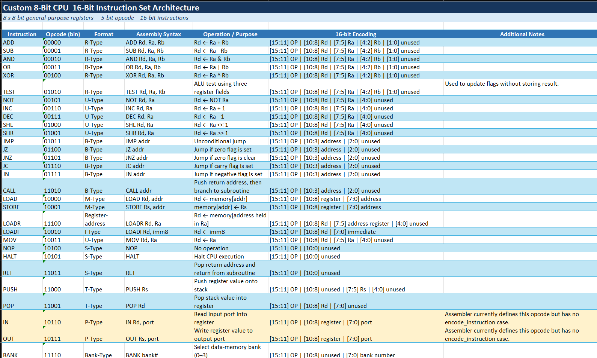
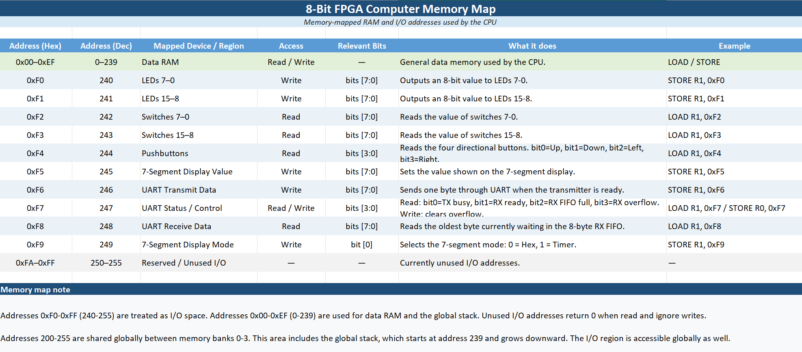
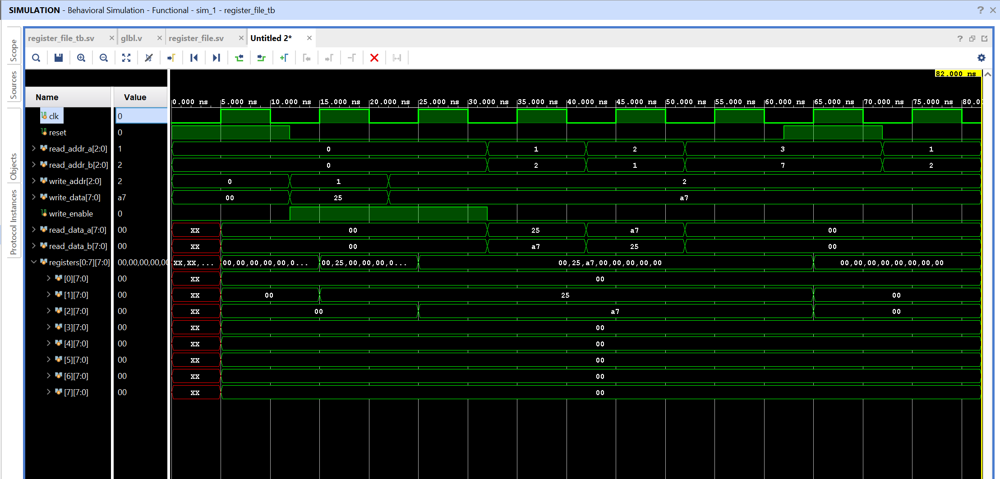

FPGA / DIGITAL DESIGN
Custom 8-bit FPGA Computer
A custom computer designed from the instruction set upward and implemented in SystemVerilog on a Basys 3 FPGA.
From architecture to working hardware
I designed and built a custom 8-bit computer from the ground up, beginning with a custom instruction set and individual RTL modules before integrating them into a complete CPU capable of executing assembly programs.
The system includes a custom ALU, register file, program counter, instruction decoder, control unit, instruction and data memory, stack-based subroutines, memory banking, and memory-mapped I/O. I also developed a Python assembler that converts the custom assembly language into machine code for the FPGA's instruction memory.
Download Architecture & Design PDFInteraction, programs, and verification
To interact with the hardware, I implemented UART serial communication, pushbutton and LED interfaces, and a multiplexed seven-segment display. Demonstration programs include arithmetic operations, division and modulo routines, a Euclidean GCD algorithm, and an interactive reaction-time game.
Verification was a major part of the project. I tested modules with SystemVerilog testbenches before CPU integration, then added debug signals for the program counter, current instruction, ALU result, and register data to trace execution in Vivado simulations. This exposed and resolved integration issues involving control signals, flags, branching, and program flow.


